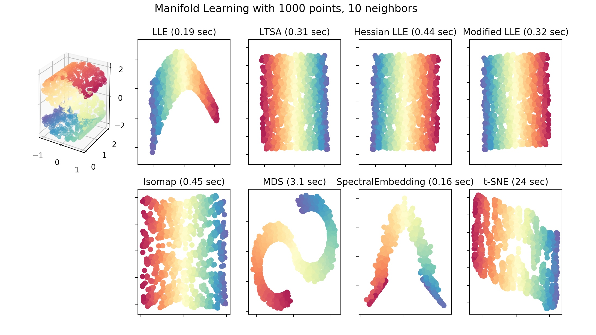

3.2 特征处理——降维
关于降维的讨论主要是来源于“维度灾难”, 这个是数学家理查德-贝尔曼提出的。
当所有参数是已知的时候，维度的增加可以让分类问题的错误率渐近为0.
当未知参数只能根据有限样本来估计时，维度的增加使错误率先降低后增加，最终收敛到0.5
维数灾难的本质原因在于数据样本的有限性。而在数据有限的条件下，去解决维度问题，自然的方法就是去降维。降维的方法有很多
1. 常用的线性降维方法：
- PCA 主成分分析
- IDA
- LDA
2.非线性的方法——流形
流形
是指嵌入在高维空间中的低维子空间，它的维度是低维数据变化的自由度。（比如地球仪的球面，虽然它是在一个三维空间中，但其实是一个二维的地图卷曲而成，\(x^2+y^2+z^2=1\)，维度是2）
流形学习
就是通过挖掘数据的内在结构实现向故由维度的转化，找到对应的低维嵌入流形。其大部分是非线性的、非参的。所以相比线性方法有更强的表达能力，但是同时对噪声更加敏感。
流形学习方法
流形学习，首先需要确定低维流形的结构，然后是高维到低维的映射关系。实际中因为都未知，所以需要做一些假设。
- 多维缩放MDS (multi dimensional scaling)
原则:让高维空间上样本之间的距离在低维空间中尽量保持一致以距离重建的误差最小为优化目标。
具体来说：
(1) 对于原始的数据\(X_{np}\),首先可以计算出任何两个样本之间的距离，从而构造出一个距离矩阵\(D\)，MDS算法的目的就是根据距离矩阵，寻找向量\(Z_1,Z_2...Z_k\),使得\(||Z_i-Z_j||≈\sigma_{ij}\)
假设\(Z\)是经过中心化处理过的，即\(\sum z_i = 0\) , 则有
\[XX^T = D≈ZZ^T\]
看到这个形式，应该就能明白怎么取解了。对D做特征分解\(D=VAV^T\)， V是对应的特征向量，我们选择前k个特征值比较大的作为最终的降维维度即可。
问题：高维空间的距离与低维空间距离保持一致这个假设是否合理？
以地球仪的球面为例，三维空间中两个点的距离和平面中两个点的距离显然是不一样的。三维空间中如果用欧式距离去度量那么北京与纽约的距离是连接两点的直线，而在平面上他是一条曲线。
# MDS
mds = manifold.MDS(n_components, max_iter=100, n_init=1)
Y = mds.fit_transform(X)
下面再说一些以几何性质作为同构基础的降维方法
- 等度量映射Isomap
等度量映射，以数据所在的低维流形与欧式空间子集的等距性为基础。描述距离的是测地距离，即流形上两点的真实距离。测地距离的近似计算方法：近邻点之间的欧式距离近似为近邻点之间的测地距离。
通过对每一个近邻点建立连接，就可以让所有数据点共同构成一张带权重的近邻连接图。这样在这张图上任意两个点的测地距离就相当于是两点之间的最短路径。可以用图论中的Dijkstra算法求解。
当计算出距离后，剩下的处理方法和MDS一致。所以总的来说包括三步：
(1) 最近邻搜索
(2) 最短路径搜索
(3) 部分特征值分解
model = manifold.Isomap(n_neighbors, n_components)
Y = model.fit_transform(X)
- 局部线性嵌入LLE(local linear embedding)
想法：待求解的低维流形在局部上是线性的，每个点可以表示成近邻点的线性组合。而局部线性嵌入就是在求解流形的过程中保持每个领域中的线性系数不变的基础上重构原数据点。
详细的推导过程https://blog.csdn.net/yukgwy60648/article/details/54578141
# 其中method可选 ['standard', 'ltsa', 'hessian', 'modified']
model = manifold.LocallyLinearEmbedding(n_neighbors, n_components, eigen_solver='auto', method=method)
Y = model.fit_transform(X)
从概率角度
- 随机近邻嵌入 SNE
随机近邻嵌入的特点：保持数据降维前后的概率分布不变,他将高维空间中的距离首先映射到了一个服从正态分布的条件概率上。这个概率描述了不同数据点之间的相似性。
\[p_{j|i}=\frac{exp(-||x_j-x_i||^2/2\sigma^2_i)}{\sum_{k\ne i}exp(-||x_k-x_i||^2/2\sigma^2_i)}\]
映射到低维空间后，按照同样方式计算条件概率，希望连个概率分布尽量一致。这里是KL散度最小化
\[KL(P||Q) = -\sum P_i ln(\frac{P_i}{Q_i})=-\sum P_i(ln(P_i)- ln(Q_i))\]
问题：
KL距离是不对称的，会导致相聚较远的点出现较大的散度差。为了是KL距离最小化，数据就会被压缩到极小的范围，产生拥挤问题。
改进
- 将KL散度改为对称形式 \(p_{ij}=p_{ji}=(p_{i|j}+p_{j|i})/2\)
- 令低维空间中的条件概率服从t分布，t分布有长尾效应，从而使高维中分布较远的点降维后也能区分开
tsne = manifold.TSNE(n_components=n_components, init='pca', random_state=0)
Y = tsne.fit_transform(X)

小结
本章主要知识结构

sklearn中关于流形学习内容都在
sklearn.manifold模块。
官网示例 http://sklearn.apachecn.org/cn/0.19.0/auto_examples/manifold/plot_compare_methods.html#sphx-glr-auto-examples-manifold-plot-compare-methods-py参考文档
https://blog.csdn.net/yukgwy60648/article/details/54578141
sklearn—文档 http://scikit-learn.org/stable/modules/manifold.html
http://sklearn.apachecn.org/cn/0.19.0/modules/manifold.html
3.vim 配置
1 简单版，直接配置好的
mac vim 配置
https://github.com/barretlee/autoconfig-mac-vimrc
git clone https://github.com/barretlee/autoconfig-mac-vimrc.git;
cd autoconfig-mac-vimrc;
chmod +x install;
./install;
调整终端配色： https://github.com/mitsuhide1992/vim-colors-solarized
macvim: https://www.jianshu.com/p/923aec861af3
2 vimrc配置中一些常用命令说明
colorscheme desert "设置主题
set number "显示行号
set autoindent "自动缩进
set cursorcolumn "光垂直平方向高亮显示
set cursorline "光标水平方向高亮显示
set mouse=a "激活鼠标可用
set tabstop=4 "设置tab和缩进为4个空格
syntax enable "开启语法
3 vim 操作快捷键
| 参数 | 说明 |
|---|---|


Copyright © 2015 Powered by MWeb, Theme used GitHub CSS.